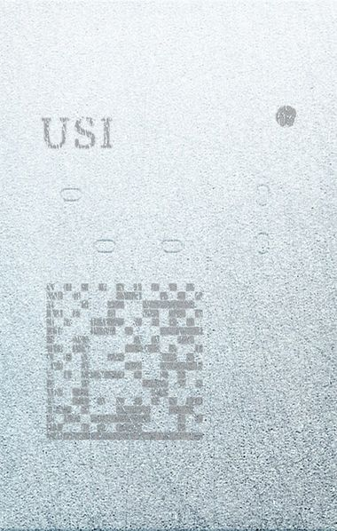
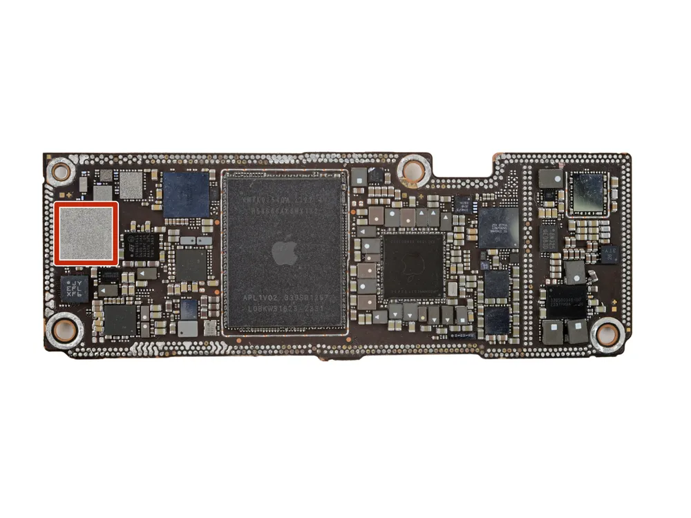

Apple에서 '나의 찾기'와 같은 초광대역 UWB기반 서비스에 사용하는 보조 칩셋이다. 초광대역 칩의 특성상 활용도가 무궁무진하기에 향후 발전이 가장 기대되는 기술 중 하나이다.
Apple U1

CPU: ARM Cortex-M4
GPU: -
메모리: -
생산공정: TSMC 16nm FinFET
주요 사용기기: iPhone SE시리즈를 제외한 iPhone 11 ~ iPhone 14 전 모델, Apple Watch SE를 제외한 Apple Watch Series 6 ~ Apple Watch Series 8 전 모델,
Apple Watch Ultra, Airpods Pro(Gen2), HomePod mini, AirTag, HomePod(Gen2)
2019년에 출시한 iPhone 11시리즈에 처음 탑재된 초광대역(UWB기반)칩이다. AirDrop 등에서 주변을 인식하는 데 사용된다. iPhone 11시리즈에 처음 탑재한 이후로, 점차 탑재한 기기들이 늘어갔다.
Airpods Pro 2세대 케이스에도 탑재되어 음향기기까지 발을 뻗었다. 음향기술에 관련이 있지는 않고, '나의 찾기'에서 Airpods Pro의 케이스의 위치를 -AirTag를 생각하면 된다- 정밀하게 파악이 가능하다.
Apple U1칩을 탑재한 기기의 경우(특히 AirTag의 경우), Apple기기의 내장 지도 앱인'지도'에서 정확한 위치 파악이 가능하며 AR로 위치를 알 수 있다. 하지만 한국에서는 지도 반출입 정책규제로 사용이
-지도를 사용하지 못하고 AR로 근거리 탐색만 가능한- 제한된다.
독자적인 Apple의 기술로만 개발되었으며, 칩셋 크기의 각 33%씩이 메모리, 디지털기능, 아날로그 기능에 할당되어 있으며, 오직 다른 Apple U1칩끼리만 통신한다고 한다.
2세대 초광대역 UWB칩('Apple U2'명 불확실)

CPU: -
GPU: -
메모리: -
생산공정: TSMC ?nm
주요 사용기기: Apple Watch Series 9, Apple Watch Ultra 2, iPhone 15시리즈 전 모델
Apple U1의 후속작이다. 다만, Apple이 공식적으로 'Apple U2'라는 이름으로 공개하지 않아 불확실하다. 하지만 후속작인 것으로 보아 추측하는 정도이다. 사진에서 빨간색으로 표시되어 있는 부분이 해당 칩셋이다.
정밀 찾기 인식 거리가 상당히 늘어났다. Apple은 인식 가능 거리가 전작 대비 최대 3배 늘어났으며, 다른 방에 있어도 서로 인식하는 수준이라고 밝혔다. 좀 더 구체적인 수치로 나타내자면, 기존 Apple U1은
정밀 찾기 신호가 약 4.9m안팎에서 끊겼다는 실험결과가 있다. 그러나 2023년 9월에 진행한 Apple Special Event에서, iPhone 15가 정밀 찾기 신호를 잡는 시연모습을 보면 약 21m즈음(약 70피트)에서 방향을
잡는 것을 확인할 수 있다.(아래 영상에서 확인)